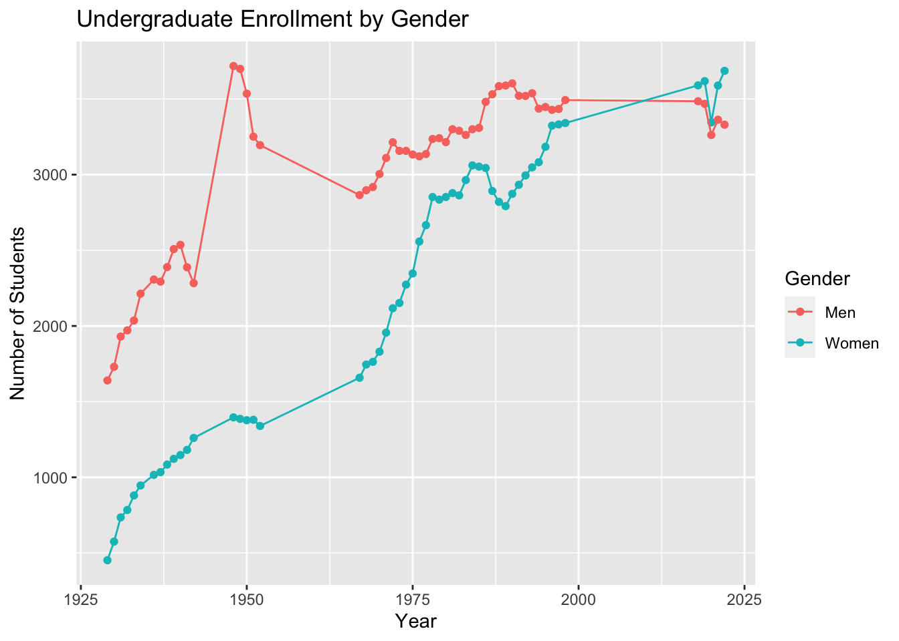
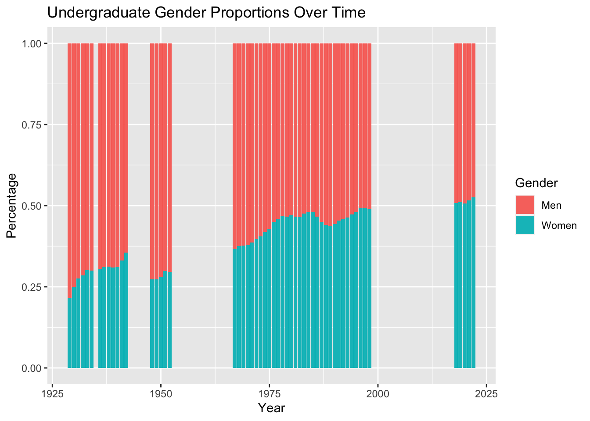

Gender Distribution
Let’s examine the distributions of male and female undergraduate students at Duke University throughout the last century, using data on male and female students collected from the fall semesters for various years between 1929 and 2022. How have these distributions changed over time, and what has Duke done to facilitate these changes?
When Duke University, then known as Trinity College, first opened in 1838, it was a small preparatory school for young men only. In a letter dated December 5, 1896, after Trinity College’s move to Durham, benefactor Washington Duke wrote to president John C. Kilgo pledging $100,000 to Trinity College for endowment provided the college “will open its doors to women placing them on an equal footing with men.” This act gained widespread acclaim and garnered increased support for womens’ rights and education.
When the college opened in Durham in 1892, a vote by the Board of Trustees’ formally allowed women to enroll, but as day students only. There were four women enrolled then, and three of them were the daughters of faculty. These women were about to graduate at the time of Washington Duke’s gift, but the funds went to building a new womens’ dormitory, which dramatically increased interested in the school for female students. The new dormitory was proudly named Mary Duke Building, in honor of Washington Duke’s only daughter, Mary Duke.
The Woman’s College was established in 1930 with the completion of the construction of East Campus, while West Campus was home to the men’s Trinity College. Classes for women were held separately from those for men, and mostly on East Campus. Over time, interest in coeducation grew, and eventually, the two schools were merged in 1972.

Looking at the scatterplot in Figure 1, we can clearly see the increase in enrollment for both undergraduate men and women over time; however, the rate of increase for women is greater than that for men. Due to gaps in raw data, there are periods of time in which the year-to-year changes are generalized, such as during the 1960s and 2000s. However, it is still apparent that there was a general upward trend.
There was a significant spike in male enrollment from 1948-1952. The end of World War II brought a flood of returning veterans to America’s universities, with veterans accounting for about 70% of all male enrollment in the years after V-J Day. The Servicemen’s Readjustment Act, or the G.I. Bill, was signed into law by President Franklin D. Roosevelt on June 22, 1944. This bill provided World War II veterans the funding for college education, housing, and unemployment insurance. This extended a world of educational opportunities to millions of veterans.
“After World War II, American higher education rapidly expanded and became an engine of opportunity and a model for the world.” - William G. Tierney, Inside Higher Ed
According to Duke Today, during the 1940s, “student ranks grew with an influx of women and soldiers who planned to aid the country’s efforts by furthering their education.” Additionally, “during wartime, Duke’s Women’s College increased admissions, allowing students like Marie Foote and Muriel Theodorsen to become the first two women to earn engineering degrees from Duke.” Other programs, such as the Economics, Medicine, and Divinity, experienced a jump in female enrollment as well.
There was also a significant dip for both male and female enrollment in 2020, which likely is the result of many students taking gap years because of the pandemic.
The proportion of women undergraduate students today is greater than that of men, and that surpass occurred approximately around 2010. As of 2023, the undergraduate school is 48% male and 52% female. Although specific data is lacking for the years between 1998 and 2018, a New York Times article published in 2003 reported the figure of 43% of the undergraduate body being women, so until then, men still remained the majority.

| Year | Men | Women | Percent Men | Percent Women |
|---|---|---|---|---|
| 1929 | 1640 | 452 | 78.39388 | 21.60612 |
| 1930 | 1730 | 575 | 75.05423 | 24.94577 |
| 1931 | 1930 | 735 | 72.42026 | 27.57974 |
| 1932 | 1971 | 784 | 71.54265 | 28.45735 |
| 1933 | 2036 | 880 | 69.82167 | 30.17833 |
| 1934 | 2213 | 946 | 70.05381 | 29.94619 |
| 1936 | 2307 | 1016 | 69.42522 | 30.57478 |
| 1937 | 2293 | 1034 | 68.92095 | 31.07905 |
| 1938 | 2389 | 1084 | 68.78779 | 31.21221 |
| 1939 | 2508 | 1122 | 69.09091 | 30.90909 |
| 1940 | 2536 | 1147 | 68.85691 | 31.14309 |
| 1941 | 2388 | 1181 | 66.90950 | 33.09050 |
| 1942 | 2283 | 1260 | 64.43692 | 35.56308 |
| 1948 | 3718 | 1396 | 72.70239 | 27.29761 |
| 1949 | 3699 | 1386 | 72.74336 | 27.25664 |
| 1950 | 3535 | 1377 | 71.96661 | 28.03339 |
| 1951 | 3251 | 1380 | 70.20082 | 29.79918 |
| 1952 | 3195 | 1339 | 70.46758 | 29.53242 |
| 1967 | 2865 | 1658 | 63.34291 | 36.65709 |
| 1968 | 2897 | 1745 | 62.40844 | 37.59156 |
| 1969 | 2918 | 1763 | 62.33711 | 37.66289 |
| 1970 | 3004 | 1830 | 62.14315 | 37.85685 |
| 1971 | 3110 | 1956 | 61.38966 | 38.61034 |
| 1972 | 3214 | 2117 | 60.28888 | 39.71112 |
| 1973 | 3157 | 2152 | 59.46506 | 40.53494 |
| 1974 | 3157 | 2273 | 58.13996 | 41.86004 |
| 1975 | 3133 | 2347 | 57.17153 | 42.82847 |
| 1976 | 3121 | 2558 | 54.95686 | 45.04314 |
| 1977 | 3136 | 2666 | 54.05033 | 45.94967 |
| 1978 | 3236 | 2852 | 53.15375 | 46.84625 |
| 1979 | 3241 | 2835 | 53.34101 | 46.65899 |
| 1980 | 3215 | 2852 | 52.99159 | 47.00841 |
| 1981 | 3300 | 2878 | 53.41534 | 46.58466 |
| 1982 | 3290 | 2863 | 53.46985 | 46.53015 |
| 1983 | 3262 | 2964 | 52.39319 | 47.60681 |
| 1984 | 3300 | 3061 | 51.87864 | 48.12136 |
| 1985 | 3309 | 3053 | 52.01195 | 47.98805 |
| 1986 | 3481 | 3044 | 53.34866 | 46.65134 |
| 1987 | 3531 | 2892 | 54.97431 | 45.02569 |
| 1988 | 3585 | 2820 | 55.97190 | 44.02810 |
| 1989 | 3589 | 2792 | 56.24510 | 43.75490 |
| 1990 | 3603 | 2873 | 55.63620 | 44.36380 |
| 1991 | 3521 | 2933 | 54.55531 | 45.44469 |
| 1992 | 3520 | 2995 | 54.02916 | 45.97084 |
| 1993 | 3538 | 3048 | 53.72001 | 46.27999 |
| 1994 | 3436 | 3082 | 52.71556 | 47.28444 |
| 1995 | 3447 | 3184 | 51.98311 | 48.01689 |
| 1996 | 3428 | 3324 | 50.77014 | 49.22986 |
| 1997 | 3434 | 3332 | 50.75377 | 49.24623 |
| 1998 | 3493 | 3341 | 51.11209 | 48.88791 |
| 2018 | 3485 | 3590 | 49.25795 | 50.74205 |
| 2019 | 3468 | 3618 | 48.94157 | 51.05843 |
| 2020 | 3262 | 3346 | 49.36441 | 50.63559 |
| 2021 | 3363 | 3589 | 48.37457 | 51.62543 |
| 2022 | 3330 | 3686 | 47.46294 | 52.53706 |